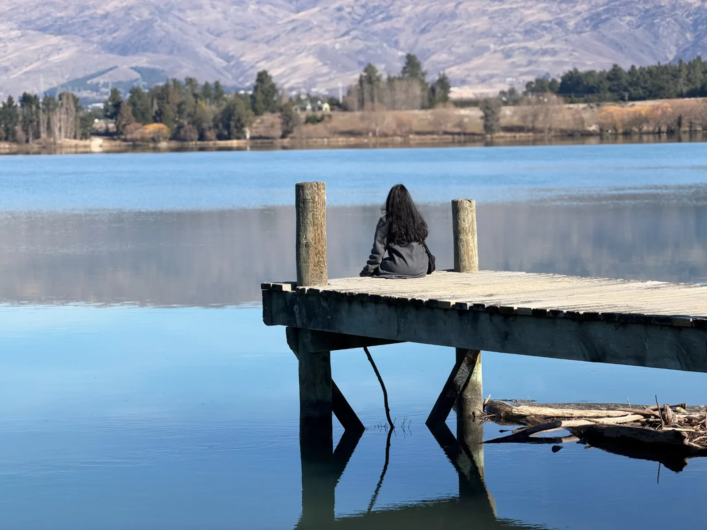

01 · A new beginning
At 19, I started again.
Moving to Australia meant a new country, new routines and the challenge of finding my feet.
Read this chapter
I experienced loneliness, anxiety and uncertainty while adapting to a life far from what was familiar. It shaped my respect for the courage it takes to ask for support during change.